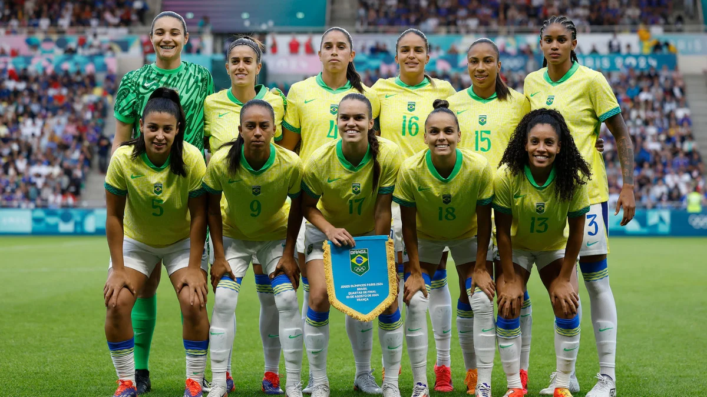

Futebol Olímpico
Estamos entusiasmados em recebê-lo em nosso espaço dedicado ao fascinante mundo do futebol olímpico! Aqui, você encontrará tudo sobre essa modalidade que une nações e celebra jovens talentos em um dos maiores palcos do esporte.
Desde sua estreia em 1900, o futebol olímpico tem sido uma vitrine de habilidade, paixão e superação. Com equipes sub-23 disputando em alto nível, o torneio não só revela futuros astros do futebol, mas também promove valores como fair play e camaradagem.
Navegue por nossas páginas para descobrir perfis de jogadores e momentos memoráveis que fazem do futebol olímpico uma experiência única e emocionante.